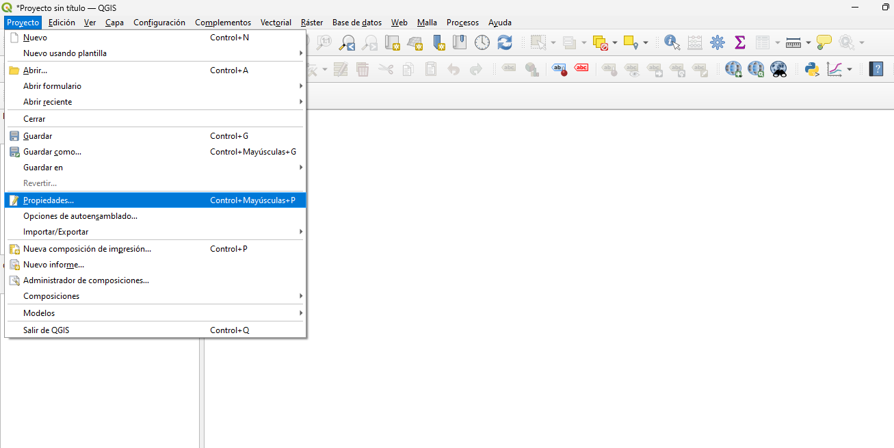

Introducción
Este repositorio presenta un informe y analiza el contenido del tutorial de QGIS, un software libre de sistemas de información geográfica (SIG). QGIS permite visualizar, editar y analizar datos espaciales, siendo una herramienta clave en proyectos de cartografía, análisis territorial y gestión de información geográfica.
El tutorial se centra en un caso práctico para la ciudad de Bogotá, utilizando datos oficiales disponibles en plataformas abiertas de la ciudad.
1. Requisitos previos
- Instalar y configurar QGIS (versión recomendada 3.x)
- Configurar Python 3.x (incluido en QGIS)
- Librerías adicionales:
pip install geopandas rasterio pyproj
2. Objetivos del Tutorial
- Introducir a los usuarios en el manejo básico de QGIS.
- Enseñar la carga y configuración de archivos vectoriales en formato Shapefile (.shp).
- Configurar el sistema de referencia de coordenadas de Colombia (EPSG:3116 – MAGNA-SIRGAS / Bogotá zone).
- Aplicar simbología personalizada para mejorar la visualización.
- Utilizar herramientas vectoriales básicas para análisis.
- Incorporar complementos como DataPlotly y QuickMapServices.
- Diseñar un mapa final y exportarlo en formato PDF.
3. Contenido del Tutorial
Los pasos se muestran a continuación acompañados de imágenes.



4. Resultados
El tutorial permitió construir mapas temáticos de Bogotá tanto con información vectorial como con datos ráster. Se lograron representaciones claras con colores personalizados para diferentes coberturas, análisis de atributos con tablas y gráficos, y cálculos de áreas. Finalmente, se generaron mapas listos para impresión y presentación.
5. Conclusiones
Este tutorial mostró cómo usar QGIS para trabajar con datos vectoriales y ráster, desde la carga y personalización de capas hasta el análisis espacial y la creación de mapas listos para impresión. La experiencia evidencia que QGIS es una herramienta práctica y versátil para visualizar, analizar y comunicar información geográfica.